A modular, full-scale vertical garden system built from polyhedral geometry. Starting from paper icosahedra, the project evolves through a systematic matrix of geometric forms — triangular, quadrilateral, pentagonal, and hexagonal bases — to arrive at a pentagonal bipyramid structure assembled from laser-cut plywood panels joined by custom-designed tab-and-slot connectors.
Team: Lisa · Catalina · Kai · Hua · Bleona
The design process began with a systematic exploration of polyhedral forms. A 4×4 matrix maps base polygon types (triangular through hexagonal) against construction methods — from flat bases to pyramids and bipyramids. This matrix became the generative ruleset, allowing each form to be evaluated for structural integrity, surface area for planting, and visual complexity.
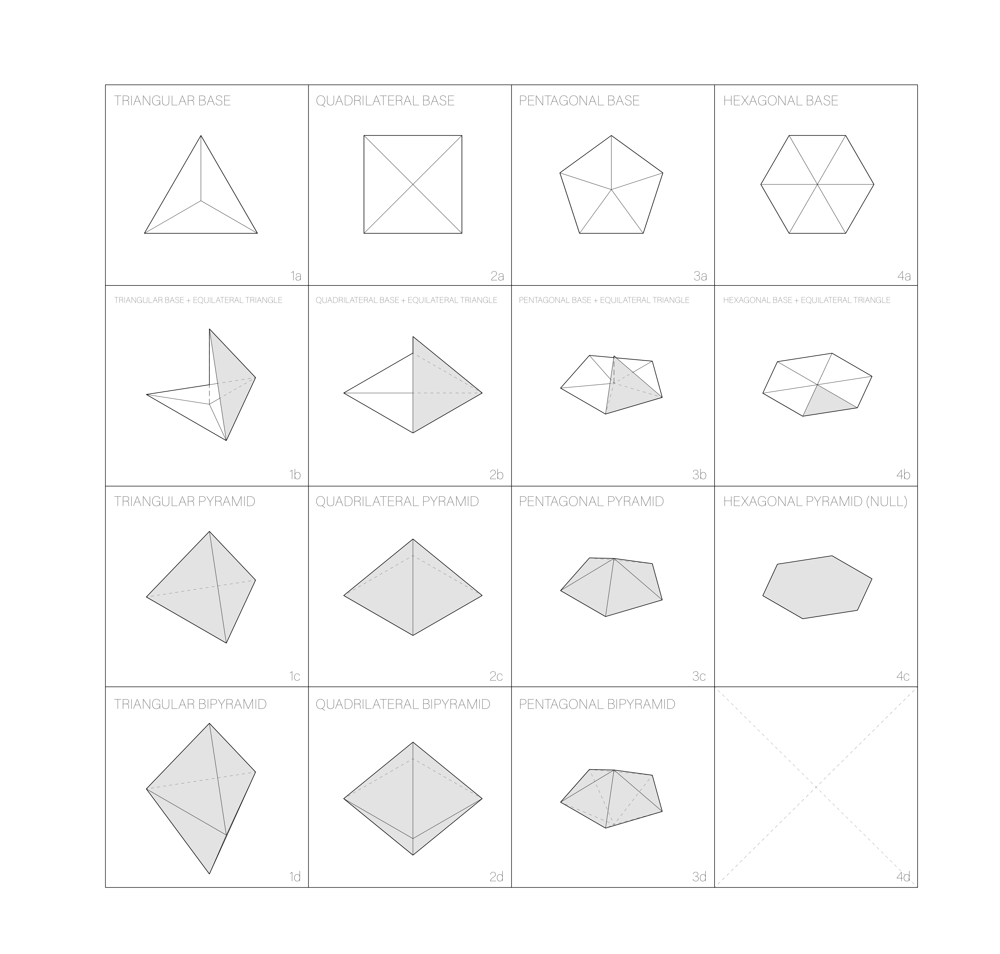
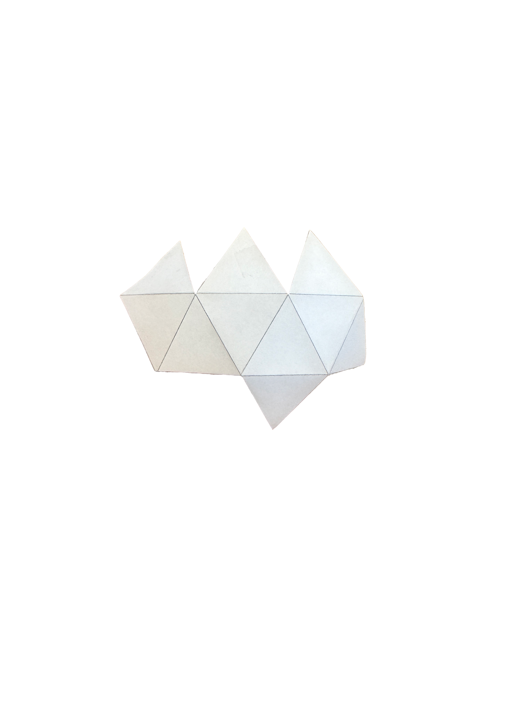
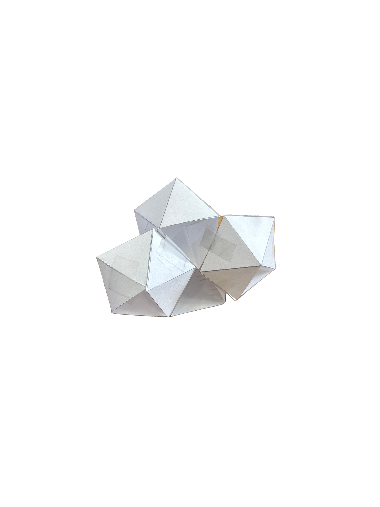
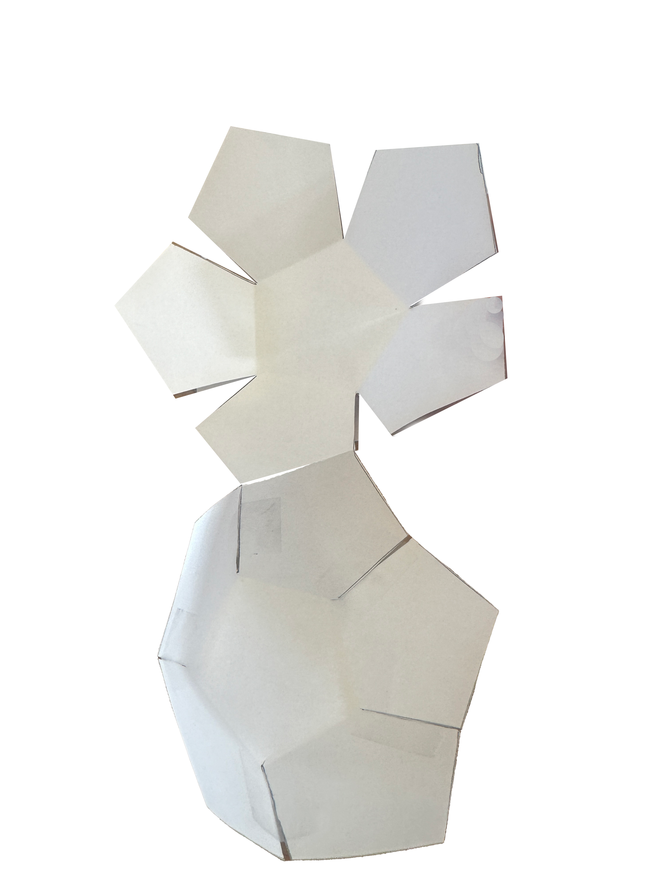
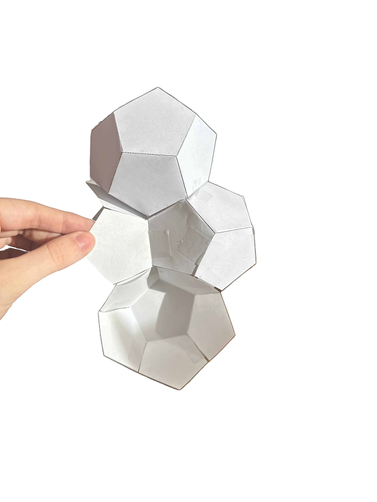
Five custom joint types (A, AA, B, BB, AB) were designed to connect panels at precise dihedral angles. Joint A connects five triangular pieces into a pentagon. Joint B connects the halves of the bipyramid. The AA and BB variants extend connections between modules, while AB combines both functions at seam intersections. Each joint was computationally derived from the geometry.
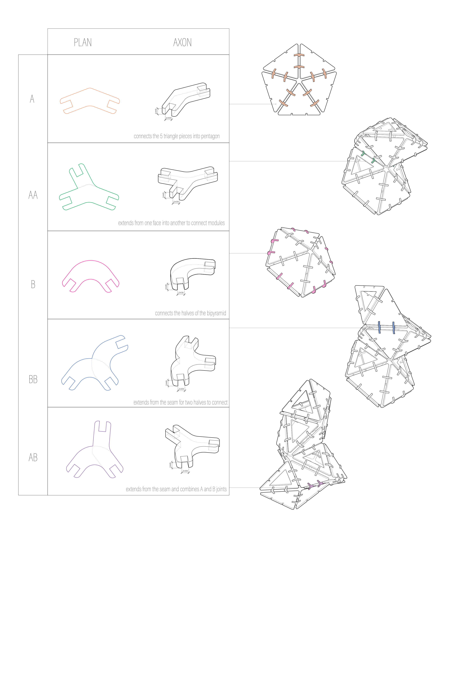
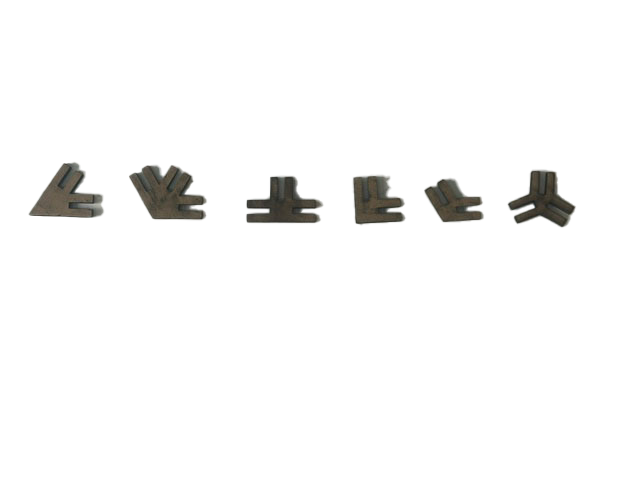
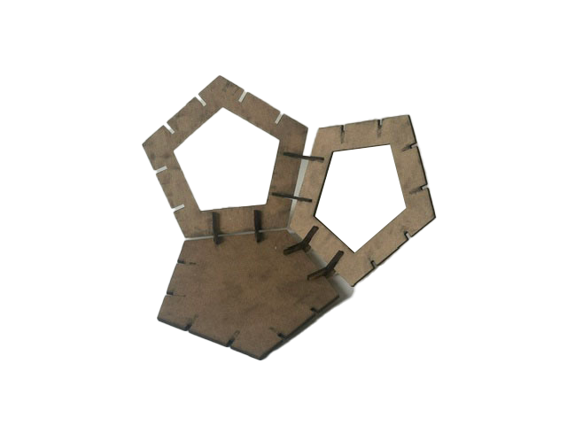
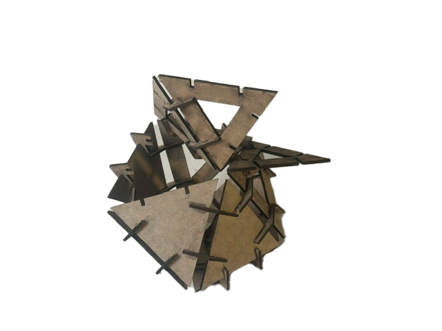
Scale models were laser-cut from MDF to test the tab-and-slot connection system. Starting with individual panel joints, the prototypes progressed to multi-module assemblies — validating that flat panels could achieve complex three-dimensional volumes through the custom connector system alone, without adhesive or fasteners.
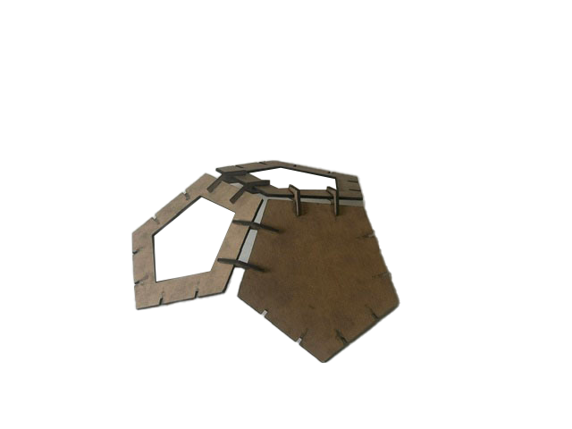
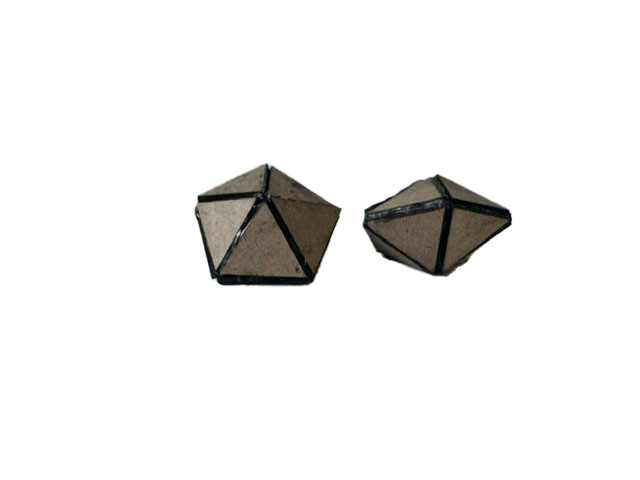
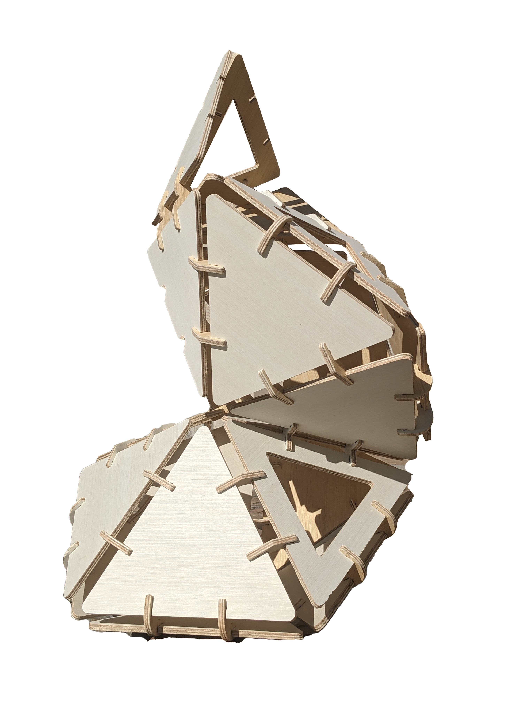
The full-scale structure was fabricated from plywood panels on a CNC router and assembled on the Carnegie Mellon campus. Standing at human height, the pentagonal bipyramid form creates interstitial pockets for planting — transforming a geometric exercise into a living vertical garden. The structure demonstrates how computational geometry and digital fabrication can produce complex organic forms from flat sheet material.
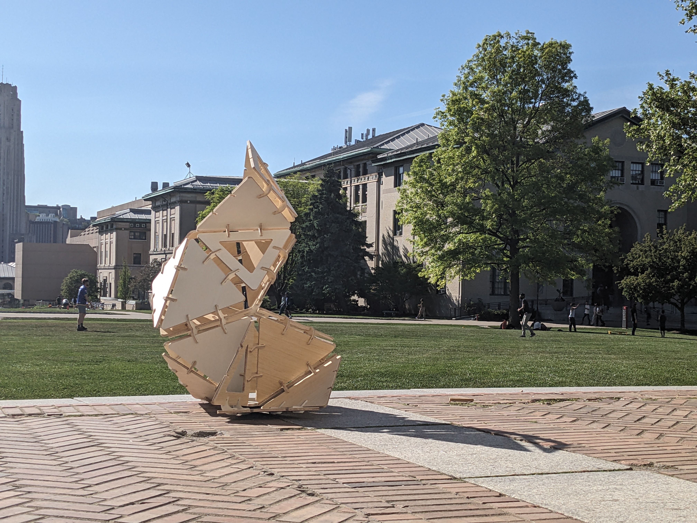

This project bridged the gap between geometric abstraction and physical production. The most valuable lesson was that a rigorous generative system — the matrix of polyhedral forms — doesn't constrain creativity but channels it. Every design decision was traceable back to the ruleset, yet the final structure feels organic and alive.
Working at full scale revealed truths that models couldn't: how weight distributes through tab joints, how plywood panels flex under load, and how interstitial spaces between facets naturally collect soil and water — turning structural gaps into planting opportunities.